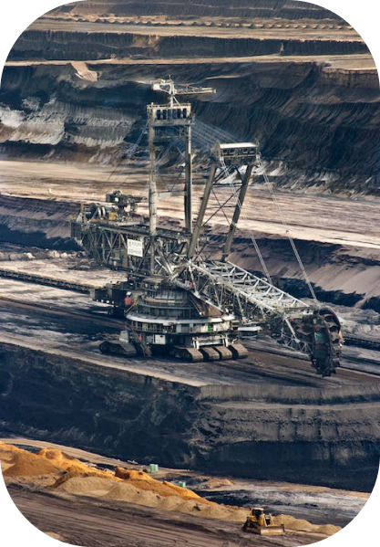

A exploração de Minérios

A exploração de minérios é uma atividade crucial para a indústria global, mas também traz consigo uma série de problemas ambientais e sociais. A extração de minérios muitas vezes resulta em degradação de ecossistemas, poluição da água e do ar, além de ameaçar a biodiversidade. Além disso, as comunidades locais muitas vezes sofrem com a perda de terras, deslocamento e impactos na saúde.
Para lidar com esses desafios, é fundamental adotar práticas de mineração responsável, incluindo a implementação de regulamentações mais rigorosas. A pesquisa e desenvolvimento de tecnologias mais limpas e eficientes também desempenham um papel vital na redução do impacto ambiental da mineração.